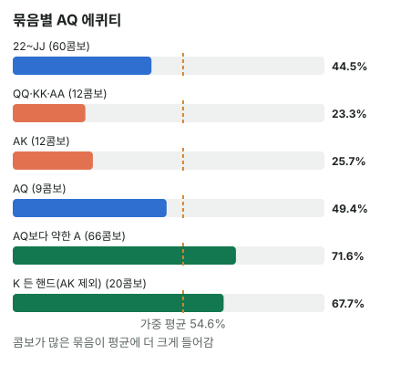

안녕하세요. 오늘은 스택이 짧아진 상대가 올인했고, Hero는 AQ를 들고 있는 장면이에요.
올인 콜은 더 이상 베팅이 없어서, 에퀴티와 필요 에퀴티만으로 결론이 딱 나와요. I06에서 배운 "핸드 대 레인지"를 그대로 써 볼게요. 그리고 AQ가 이 레인지를 상대로 왜 이득인지, 그 이유가 상대 레인지의 어느 부분에서 나오는지까지 따라가 볼게요.
이 글에서 배울 것
- 올인 콜의 필요 에퀴티가 절반에 가까운 이유와, 블라인드가 그걸 조금 낮춰 주는 원리
- 상대 올인 레인지를 묶음으로 나눠 세고, 콤보 가중 평균으로 하나의 숫자를 만드는 법
- 콜의 이득이 "지는 핸드가 있나"가 아니라 "이기는 묶음이 얼마나 큰가"에서 나온다는 것
오늘의 핸드
Hero (BB 자리 · 스택 20BB)


프리플랍
캐시 게임, 블라인드 SB 0.5BB · Hero(BB) 1BB → 상대(BTN) 20BB 올인 → SB 폴드 → Hero는 콜? 폴드?
지금 팟은 0.5 + 1 + 20 = 21.5BB. Hero는 이미 1BB를 냈으니 20 − 1 = 19BB만 더 내면 돼요. 콜하면 Hero도 올인이에요.
결론부터 말할게요. 오늘 가정한 상대라면 콜이 이득입니다. 콜할 때마다 평균 약 +3.13BB예요.
1단계. 필요 에퀴티
합격선
필요 에퀴티 = 콜해서 본전이 되려면 최소한 가져와야 하는 몫이에요(B06). 비유하면 합격선이죠.
필요 에퀴티 = 19(Hero 콜) ÷ (21.5(지금 팟) + 19(Hero 콜)) = 19 ÷ 40.5 = 약 46.9%
왜 절반보다 조금 낮을까
올인끼리 붙으면 서로 비슷한 돈을 거니, 기준선이 반반 근처예요. 그런데 오늘은 절반보다 조금 낮죠. 팟에 Hero가 이미 낸 1BB와 SB가 접으면서 두고 간 0.5BB가 있어서예요. 이 1.5BB는 이기는 쪽이 가져가는 덤이라, Hero가 조금 덜 이겨도 본전이 돼요.
2단계. 상대 올인 레인지 (가정 레인지 기준)
가정한 레인지
버튼에서 20BB로 올인하는 상대가 이런 핸드로 올인한다고 가정할게요: 모든 포켓페어, A가 들어간 수딧 전부, A8 이상 오프수트, KT 이상 수딧, KQ 오프수트. Hero가 A♦·Q♣를 들고 있어서 A·Q가 들어간 콤보가 줄어요(카드 제거).
묶음별로
| 묶음 | 콤보 | 그 묶음 상대 Hero 에퀴티 |
|---|---|---|
| 22~JJ | 60콤보 | 약 44.51% |
| QQ·KK·AA | 12콤보 | 약 23.29% |
| AK | 12콤보 | 약 25.71% |
| AQ | 9콤보 | 약 49.35% |
| AQ보다 약한 A (A2s~AJs, A8o~AJo) | 66콤보 | 약 71.6% |
| K 들어간 핸드, AK 제외 (KTs·KJs·KQs·KQo) | 20콤보 | 약 67.67% |
| 합계 | 179콤보 | 약 54.65% |

합계 54.65%는 I06에서 배운 대로, 묶음별 에퀴티에 콤보 수만큼 무게를 줘서 평균 낸 값이에요.
💡 빨리 세는 팁: Hero가 A 한 장을 들었으니 상대 A는 3장. AJo처럼 다른 무늬 조합은 3 × 4 − 3 = 9콤보
묶음마다 무슨 일이 생길까
- QQ 이상과 AK: 크게 져요(합격선보다 한참 아래). Hero는 아직 페어가 아닌데 상대는 Q·K·A 페어를 이미 들었고, QQ는 Hero의 Q를, AA는 Hero의 A를 막고 있어 맞출 카드도 줄어요. AK는 A를 같이 쥐고 키커가 더 높아요. 둘을 합쳐 12 + 12 = 24콤보예요
- 작은·중간 페어: 조금 져요(약 44.51%). 상대는 이미 페어, Hero는 높은 카드 두 장이라 반반에 가까운 싸움이지만, 합격선 약 46.9%보다는 조금 아래라 이 묶음만 보면 살짝 손해예요. 콤보는 60으로 가장 큰 묶음이에요
- AQ: 거의 비겨서 팟을 나눠요(약 49.35%). 합격선을 살짝 넘어요
- 약한 A와 K 핸드: 합격선보다 한참 위로 크게 이겨요. 합치면 66 + 20 = 86콤보예요
가중 평균을 식으로 쓰면 이래요.
(60 × 44.51 + 12 × 23.29 + 12 × 25.71 + 9 × 49.35 + 66 × 71.6 + 20 × 67.67) ÷ 179 = 약 54.65
3단계. 비교와 콜 손익(EV)
| 숫자 | |
|---|---|
| 필요 에퀴티 | 약 46.9% |
| Hero 에퀴티 | 약 54.65% |
콜 손익(EV) = 0.5465 × 21.5 − 0.4535 × 19 = 11.75 − 8.62 = 약 +3.13BB → 콜
이기면 지금 팟 21.5BB를 벌고, 지면 Hero가 더 낸 19BB를 잃어요. 콜 손익(EV)은 같은 콜을 여러 번 했을 때 한 번 평균 남는 돈이에요(B24).
올인 콜이라 뒤에 더 결정할 게 없어요. 다섯 장이 끝까지 다 깔리니 에퀴티를 그대로 다 가져가고, 이 평균값이 그대로 콜의 가치예요. 한 판 한 판은 21.5BB를 따거나 19BB를 잃어요.
왜 그럴까: AQ는 이 레인지에서 "누르는 쪽"이에요
같은 A를 쥐었는데 키커가 높으면
약한 A 66콤보를 상대로 Hero 에퀴티가 약 71.6%로 높은 건, Hero가 A를 같이 쥐고 키커가 더 높기 때문이에요. A를 맞추면 상대도 A를 맞추지만, Q 키커가 상대의 J·T·8 같은 키커를 이겨요. 이렇게 한 장을 공유하고 다른 한 장이 더 높은 쪽을 누르는 쪽이라고 해요.
K 핸드 20콤보는 둘로 나뉘어요. KQ(12콤보)는 Q를 같이 쥐었는데 Hero의 A가 K보다 높아서 Hero가 누르는 쪽이에요(약 73.58%). KT·KJ 수딧(8콤보)은 겹치는 카드는 없지만 Hero 두 장이 상대 두 장보다 모두 높아서(A > K, Q > J·T) 앞서요(약 58.8%).
반대로 AK를 만나면 Hero가 눌리는 쪽이 돼요. 같은 A, 키커가 Q < K라 약 25.71%죠. 같은 원리가 Hero에게 좋게도 나쁘게도 작용하는 거예요. 이 관계는 I15(도미네이트)에서 자세히 다뤄요.
결론을 정하는 건 가장 큰 묶음
가중 평균이라 콤보가 많은 묶음이 결과를 끌고 가요. 합격선 약 46.9%를 기준으로 묶음마다 보면 이래요.
| 묶음 | 콤보 | 합격선과 비교 |
|---|---|---|
| Hero를 누르는 쪽(QQ 이상·AK) | 24 | 약 24.5%로 한참 아래 → 큰 손해 |
| 반반 쪽(22~JJ·AQ) | 69 | 약 45.14%로 조금 아래 → 살짝 손해 |
| Hero가 누르는 쪽(약한 A·K) | 86 | 약 70.69%로 한참 위 → 큰 이득 |
반반 쪽은 조금씩 손해고, 누르는 쪽 24콤보에서는 크게 잃어요. 그 손해를 Hero가 누르는 86콤보의 큰 이득이 메워서, 전체가 합격선 위로 올라온 거예요. 결론을 정한 건 AQ라는 이름이 아니라 이 세 줄의 콤보 수예요.
자주 하는 실수
실수 1. 이미 낸 1BB를 빼지 않고 계산하기 "20BB 올인이니 20BB를 내야지" 하고 20 ÷ (21.5 + 20) = 0.4819로 보는 실수예요. Hero는 BB로 1BB를 이미 냈으니 더 낼 돈은 19BB, 기준선은 약 46.9%예요. 작은 차이 같아도, 승률이 기준선 근처일 때는 결론이 바뀔 수 있어요. 대신 BB에서는 언제나 "올인 금액 − 이미 낸 1BB"부터 구해요.
실수 2. "AK·AA에 지면 끝이니 폴드" "상대가 AK나 AA면 크게 지잖아" 하며 접는 실수예요. 맞아요, 그 묶음 상대로는 약 24.5%뿐이에요. 하지만 그 묶음은 179콤보 중 24콤보예요. 지는 핸드가 있느냐가 아니라 몇 콤보냐가 결론을 정해요. 대신 무서운 핸드가 떠오르면, 그 핸드가 레인지에서 몇 콤보인지 먼저 세어 봐요.
실수 3. 묶음 에퀴티를 그냥 평균 내기 표의 여섯 묶음 에퀴티를 더해 6으로 나누는 실수예요. 그러면 12콤보짜리 AK와 66콤보짜리 약한 A가 같은 무게를 받아요. 대신 묶음 에퀴티는 언제나 콤보 수를 곱해 더한 뒤 전체 콤보로 나눠요.
"토너먼트라면 이 계산이 달라져요?"
좋은 질문이에요. 오늘 계산은 칩 기준이에요. 칩 하나를 따면 그만큼 이득이고, 잃으면 그만큼 손해라고 본 거죠. 캐시 게임은 칩이 곧 돈이라 이 계산이 그대로 손익이에요.
토너먼트에서는 칩과 상금이 정비례하지 않아요. 특히 상금권 바로 앞이라면, 칩을 다 잃고 탈락하는 손해가 칩을 두 배로 늘리는 이득보다 클 수 있어요. 그러면 칩 기준으로는 이득인 콜도 상금 기준으로는 손해가 될 수 있죠. 상금 구조까지 넣는 계산(ICM)은 고급 E10에서 다뤄요.
숫자가 뒤집히는 지점
기준은 하나예요. 상대 레인지 상대 Hero 에퀴티가 약 46.9%보다 높으냐 낮으냐. 레인지의 세 줄(누르는 쪽·반반·Hero가 누르는 쪽) 콤보 수가 바뀌면 이 숫자도 움직여요.
선생님의 한마디
올인을 맞으면 이 순서로 해요.
- "올인 금액 − 이미 낸 블라인드"로 더 낼 돈을 구하고 기준선 잡기
- 상대 레인지를 "나를 누르는 핸드 / 반반 / 내가 누르는 핸드" 세 줄로 나누고 각 줄의 콤보 수 적기
- 토너먼트라면 상금권과의 거리도 떠올리기
연습 문제 (같은 자리, 같은 Hero 핸드)
학습툴 에퀴티 계산기의 레인지 입력은 확인 중이에요. 지금은 정답의 숫자(블로그에서 직접 계산한 값)를 따라가 보고, 학습툴에는 핸드 대 핸드(내 핸드와 상대 핸드 하나)만 넣어 확인해 보세요.
문제 1. 상대가 88 이상, AJs 이상, AQo 이상으로만 올인한다면? 블로그에서 직접 묶음별 값을 구해 두었어요. 콤보 가중 평균을 직접 내서 합격선과 비교해 보세요.
| 묶음 | 콤보 | 그 묶음 상대 Hero 에퀴티 |
|---|---|---|
| 88~JJ | 24콤보 | 약 42.99% |
| QQ·KK·AA | 12콤보 | 약 23.29% |
| AK | 12콤보 | 약 25.71% |
| AJs | 3콤보 | 약 70.49% |
| AQ | 9콤보 | 약 49.35% |
정답 보기
(24 × 42.99 + 12 × 23.29 + 12 × 25.71 + 3 × 70.49 + 9 × 49.35) ÷ 60 = 약 37.93 레인지 60콤보, Hero 에퀴티 약 37.93% < 약 46.9% → 폴드. 콜 손익 = 0.3793 × 21.5 − 0.6207 × 19 = 8.15 − 11.79 = 약 −3.64BB. Hero가 누르던 약한 A·K 묶음은 AJs 3콤보만 남고, Hero를 누르는 쪽(AK·높은 페어) 24콤보가 레인지의 큰 몫이 됐어요. 반반 쪽 88~JJ도 합격선 아래라 메워 줄 묶음이 없어요.
문제 2. 상대가 모든 포켓페어, A가 들어간 핸드 전부(무늬 상관없이), K9·KT·KJ·KQ(무늬 상관없이), 그리고 QTs·QJs·JTs까지 올인한다면?
정답 보기
레인지 283콤보, Hero 에퀴티 약 59.63% → 콜. 콜 손익 = 0.5963 × 21.5 − 0.4037 × 19 = 12.82 − 7.67 = 약 +5.15BB. Hero가 누르는 약한 A·K가 크게 늘어서 이득도 커졌어요.
핵심 정리
- 올인 콜은 에퀴티 vs 필요 에퀴티로 결론이 확정돼요. 블라인드 덤 때문에 기준선은 절반보다 조금 낮아요
- 레인지 에퀴티는 묶음별 에퀴티의 콤보 가중 평균이에요
- AQ는 약한 A·K를 누르고, AK·높은 페어에게 눌려요. 결론은 각 묶음의 콤보 수가 정해요
- 칩 기준 계산이라, 토너먼트 상금 구조는 따로 생각해야 해요
정리하며
오늘은 20BB 올인을 AQ로 받을지 레인지로 계산했어요.
기준선은 19 ÷ 40.5로 약 46.9%였고, 가정 레인지 179콤보 상대 Hero 에퀴티는 약 54.65%라 콜이었죠. 크게 지는 AK·높은 페어는 24콤보, 살짝 손해인 반반 쪽이 69콤보였지만, Hero가 누르는 약한 A·K 86콤보가 그 손해를 메웠어요. AQ의 가치는 AQ 자체가 아니라 상대가 어떤 모양의 레인지로 올인하느냐가 정한다는 게 오늘의 핵심이에요.
다음 글 I17에서는 반대편에 서 봐요. 스택이 짧을 때 왜 올인 아니면 폴드가 기본이 되는지, 올인하는 쪽의 계산을 다뤄요.
AI 작성 · 숫자는 계산 검증 (프리플랍 몬테카를로, 콤보마다 5,000번) · 가정 레인지 기준 (솔버·올인차트 결과 아님) · 올인 콜이라 콜 손익이 최종 결과